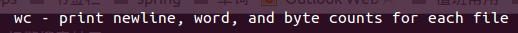
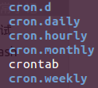

查看当前运行了多少个tomcat实例：
ps -ef | grep -v grep | grep -c tomcat
ps -ef | grep -v grep | grep tomcat | wc

定时任务crond：
crond是linux系统用来定期执行命令或指定程序任务的一种服务或软件。一般情况下，我们安装完ubuntu操作系统之后，默认便会启动Crond任务调度服务。Crond服务会定期（默认每分钟检查一次）检查系统中是否有要执行的任务工作。如果有，便会根据其预先设定的定时任务规则自动执行该定时任务工作。这个Crond定时任务服务就相当于我们早上使用的闹钟一样。
在/etc目录下，有系统自带的定时任务脚本，可以参考学习

crontab -e 编辑定时任务，每一个用户会有不同的定时任务
在线生成cron表达式：http://cron.qqe2.com/
crontab命令的功能是在一定的时间间隔调度一些命令的执行。在/etc目录下有一个crontab文件，这里存放有系统运行的一些调度程序。每个用户可以建立自己的调度crontab。
crontab命令有三种形式的命令行结构：
crontab [-u user] [file]
crontab [-u user] [-e|-l|-r]
crontab -l -u [-e|-l|-r] 第一个命令行中，file是命令文件的名字。如果在命令行中指定了这个文件，那么执行crontab命令，则将这个文件拷贝到crontabs目录下；如果在命令行中没有指定这个文件，crontab命令将接受标准输入（键盘）上键入的命令，并将他们也存放在crontab目录下。
命令行中-r选项的作用是从/usr/spool/cron/crontabs目录下删除用户定义的文件crontab；
命令行中-l选项的作用是显示用户crontab文件的内容。
使用命令crontab -u user -e命令编辑用户user的cron(c)作业。用户通过编辑文件来增加或修改任何作业请求。
执行命令crontab -u user -r即可删除当前用户的所有的cron作业。
作业与它们预定的时间储存在文件/usr/spool/cron/crontabs/username里。username是用户名，在相应的文件中存放着该用户所要运行的命令。命令执行的结果，无论是标准输出还是错误输出，都将以邮件形式发给用户。文件里的每一个请求必须包含以spaces和tabs分割的六个域。前五个字段可以取整数值，指定何时开始工作，第六个域是字符串，称为命令字段，其中包括了crontab调度执行的命令。
第一道第五个字段的整数取值范围及意义是：
0～59 表示分
1～23 表示小时
1～31 表示日
1～12 表示月份
0～6 表示星期（其中0表示星期日）
/usr/lib/cron/cron.allow表示谁能使用crontab命令。如果它是一个空文件表明没有一个用户能安排作业。如果这个文件不存在，而有另外一个文件/usr/lib/cron/cron.deny,则只有不包括在这个文件中的用户才可以使用crontab命令。如果它是一个空文件表明任何用户都可安排作业。两个文件同时存在时cron.allow优先，如果都不存在，只有超级用户可以安排作业。
关于/etc/init.d：
如果你使用过Linux系统，那么你一定听说过init.d目录。这个目录到底是干嘛的呢？它归根结底只做了一件事情，但这件事情非同小可，是为整个系统做的，因此它非常重要。init.d目录包含许多系统各种服务的启动和停止脚本。它控制着所有从acpid到x11-common的各种事务。当然，init.d远远没有这么简单。（译者注：acpid 是linux操作系统新型电源管理标准 ；X11也叫做X Window系统，X Window系统 (X11或X)是一种位图显示的 视窗系统 。它是在 Unix 和 类Unix 操作系统 ，以及 OpenVMS 上建立图形用户界面的标准工具包和协议，并可用于几乎已有的现代操作系统）。
当你查看/etc目录时，你会发现许多rc#.d 形式存在的目录（这里#代表一个指定的初始化级别，范围是0~6）。在这些目录之下，包含了许多对进程进行控制的脚本。这些脚本要么以”K”开头，要么以”S”开头。以K开头的脚本运行在以S开头的脚本之前。这些脚本放置的地方，将决定这些脚本什么时候开始运行。在这些目录之间，系统服务一起合作，就像运行状况良好的机器一样。然而，有时候你希望能在不使用kill 或killall 命令的情况下，能干净的启动或杀死一个进程。这就是/etc/init.d能够派上用场的地方了！
/etc/init.d/command 选项comand是实际运行的命令，选项可以有如下几种：
- start
- stop
- reload
- restart
- force-reload
大多数的情况下，你会使用start,stop,restart选项。例如，如果你想关闭网络，你可以使用如下形式的命令：
/etc/init.d/networking stop
又比如，你改变了网络设置，并且需要重启网络。你可以使用如下命令：
/etc/init.d/networking restart
关于/etc/rc.local
rc.local也是我经常使用的一个脚本。该脚本是在系统初始化级别脚本运行之后再执行的，因此可以安全地在里面添加你想在系统启动之后执行的脚本。常见的情况是你可以再里面添加nfs挂载/mount脚本。此外，你也可以在里面添加一些调试用的脚本命令。例如，我就碰到过这种情况：samba服务总是无法正常运行，而检查发现，samba是在系统启动过程中就该启动执行的，也就是说，samba守护程序配置保证了这种功能本应该正确执行。碰到这种类似情况，一般我也懒得花大量时间去查为什么，我只需要简单的在/etc/rc.local脚本里加上这么一行：
/etc/init.d/samba start
这样就成功的解决了samba服务异常的问题。
Written with StackEdit.